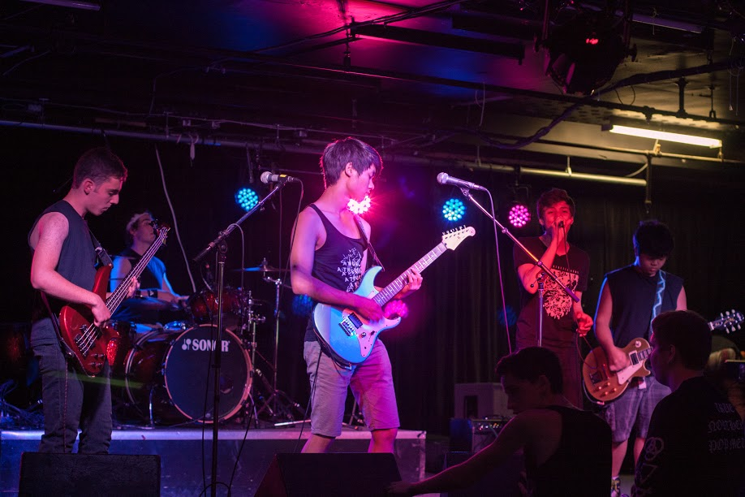

JONAH BLASER OF THE THE SYNTHETIC ARMY
Article by Justin Bellmore
Photos by Tim Hill
Uploaded on November 17, 2014
He may not be the front man, but this laid back, funk-loving rock drummer has his own ways of engaging the crowd; he uses wacky facial expressions that read something between hysteria and pure euphoria;
Jonah Blaser is an 18-year old drummer from Aurora, Ont., and is currently a member of a pop-rock band known as The Synthetic Army.
The band is a synthesis of diverse musical nuances. They are an “army”, because of their high-octane performances that keep the crowds coming back for more. The band consists of Blaser on drums, Brandon Gratch on rhythm guitar, Alex Karepetyan on bass, Jacob Peng on lead guitar and Nathaniel Astudillo on vocals.
Blaser said that the band tries to focus indie/alternative music and he said that he, personally, draws most of his creative energy from the iconic funk-rock band The Red Hot Chili Peppers.
“Chad Smith [of the RHCP] is my greatest inspiration, but as a band, we also draw from groups like The Wonder years and Marianas Trench,” Blaser said.
Blaser met his band in Aurora, just north of Toronto, where he went to high school. Blaser has been playing drums of all styles, since he was in the fifth grade.
“I was taking drum lessons for four years when I started out,” Blaser said. “I had the most amazing teacher, but he had a band of his own and eventually had to focus his time on his own band.”
“He had taught me how to ‘lift’ drum parts, and how to read music, so I was able to develop on my own,” he added.
Blaser explained that “lifting” a drum beat means listening to a song, figuring out what the drummer is doing, writing it down, memorizing it, understanding the rhythm and dynamics, and being able to play it back.
Before the days of "The Synthetic Army", Blaser was part of a band named "The One Percent". With this name, they had also created their own chant to get in spiritual sync with one another before a show. Their chant sounded something to the tune of: “One percent – ain’t nothin’ to f*** with!”, and they would repeat these words until they had built themselves into a frenzy before going on stage.
But Jonah also has preparation methods of his own.
When Blaser is alone and driving up his equipment to a show, he’ll blast his favorite songs to get him in the proper mental state. He said he plays his favorite songs by the RHCP on full volume, because they play amazing live performances, and once he starts, he simply can’t stop.
“The whole night before a show I’ll end up watching RHCP live performances on YouTube,” he said.
The Synthetic Army recently released an album in August called Incandescent. Their near-future goal is to produce a high-quality music video. They anticipate upcoming film dates for their new single Chicago.
Something most people wouldn’t expect from of our happy-go-lucky percussionist is his passion for table top games like “Dungeons and Dragons” or “War-hammer”. “For the one game, War-Hammer, I actually paint the small models,” Blaser says. “They are like miniature action-figures.”
Aside from this, Blaser is also a practiced filmmaker, and hopes to one day shoot his own professional music videos. His enthusiasm for filmmaking has brought him to his current studies at Ryerson University, majoring in image arts.
The Synthetic Army lives in the moment; they have no dead-set future plans with the band. They know that music will touch every aspect of their lives, and will continue to serve as a gateway to their dreams.
“We want people to enjoy our performance so much, that they go home and look us up,” Blaser says. “The most I could hope to get out of music is to promote and spread good music to people and have fun doing it.”

back to spotlight